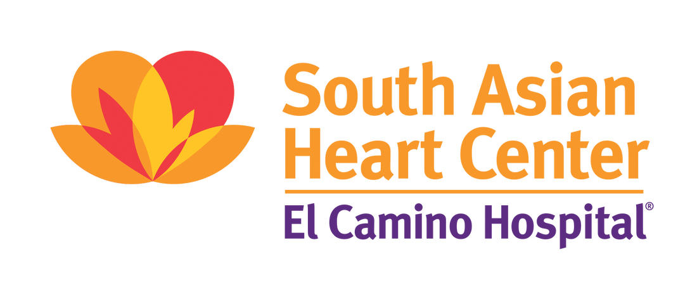

Teaching & Volunteering

I volunteer once a week at the San Francisco Free Clinic, where we provide free medical care to uninsured patients, including diabetes management, imaging referrals, and minor procedures. I am passionate about contributing to a future where quality care is available to everyone, regardless of their insurance status. |

Since 2024, I have taught part-time at Inspirit AI, facilitating the Scholars curriculum for elementary and high school students (in-person at Khan Lab School and California High School as well as virtually). I have also taught the Deep Dives course on AI/ML applications in medicine and mentor students one-on-one. |
|

From 2019-2022, I volunteered at health clinics focused on educating and providing early detection for heart disease in the South Asian community, which experiences disproportionately high rates of cardiovascular disease. Our outreach was in collaboration with the South Asian Heart Center and clinicians from the MASALA study. |
|
In 2021, I co-taught a DeCal course at UC Berkeley on substance use disorders, drug policy, and neuroscience—teaching alongside Erin Sibel Sezgin, who originally developed the course content. |